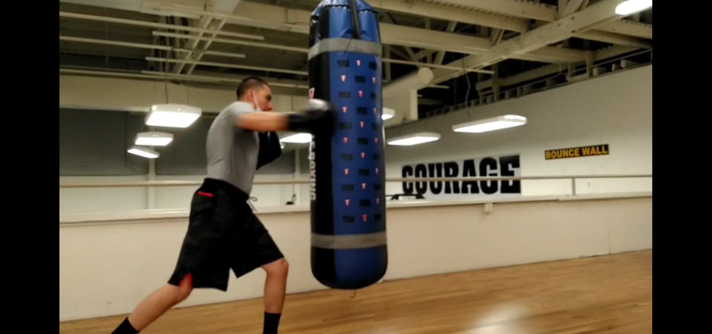
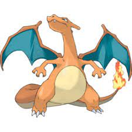

Boxing
In my free time I like to practice my Boxing, I love boxing because it teaches me discipline, and self defense. It also helps me focus at work, and in school by giving me a stress relief.
Wild Life

I was always fascinated by animals my whole life, I love to go to the zoo and observe them. I find it mesmerizing, and peaceful to just sit and watch the wildlife, especially the colorful birds like Blue Jays, and Toucans.
Pokemon
Pokemon has always been something I loved collecting since I was a youth. Just like wildlife, when I collect the cards I enjoy looking at all of the cool arts, and amazing colors. I will never get tired of collecting.
Computer Networking
I have always been into computers since I was a youth, just like everything else listed here. I find the way they operate really fascinating, and hope to learn more about it. Especially when it comes to networking.